Ориентирование на скорости лыжника
В лыжном ориентировании спортсмен не бегает по лесу, а выбирает путь по сети лыжней, нанесённой на карту зелёными линиями: толщина и пунктир показывают ширину и качество лыжни. Решения о пути приходится принимать на ходу, с картой на груди, и цена ошибки — секунды, которые уже не отыграть.
Международная федерация ориентирования (IOF) разыгрывает чемпионат мира с 1975 года. Почти полвека его делили между собой Финляндия, Швеция, Норвегия и — с 1990-х — Россия, а в последние годы на пьедестал вышли эстонцы, болгары и швейцарцы.
- Первый чемпионат
- 1975, Хювинкяа (Финляндия)
- Периодичность
- раз в два года; с 2022 — по чётным годам
- Дисциплины
- спринт, гонка преследования, миддл, смешанная спринт-эстафета (раньше — лонг и эстафета)
- Вне Европы
- Япония (2009, 2026), Казахстан (2013)
- Россия-хозяйка
- Красноярск 2000 и 2017, Московская область 2007
- 1975Хювинкяа
- 1977Велинград
- 1980Авеста
- 1982Айген-им-Энсталь
- 1984Лавароне
- 1986Батак
- 1988Куопио
- 1990Шеллефтео
- 1992Понтарлье
- 1994Валь-ди-Нон
- 1996Лиллехаммер
- 1998Виндишгарстен
- 2000Красноярск
- 2002Боровец
- 2004Осарна
- 2005Леви
- 2007Московская область
- 2009Русуцу
- 2011Тэнндален
- 2013Риддер
- 2015Хамар
- 2017Красноярск
- 2019Питео
- 2021Кяэрику
- 2022Кеми
- 2024Рамзау-ам-Дахштайн
- 2026Русуцу
1975–1990: северная классика

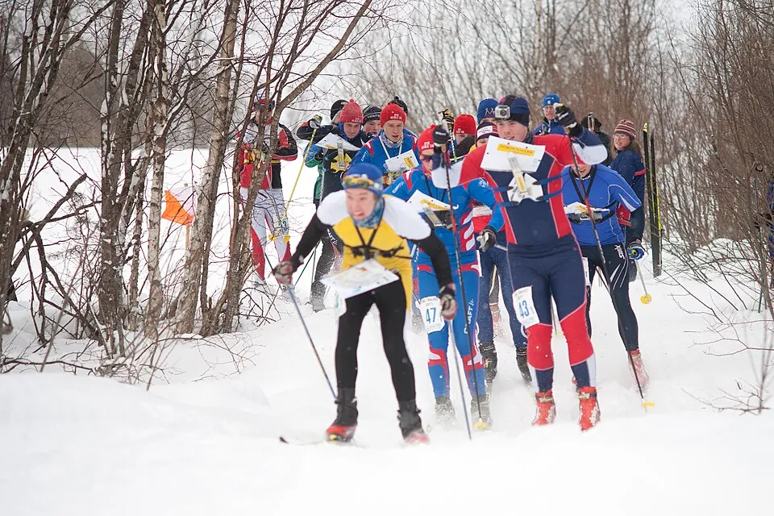
Первый чемпионат мира 1975 года в финском Хювинкяа сегодня выглядит почти экзотикой. Мужчины прошли 23,4 км всего с четырьмя контрольными пунктами, а женская трасса длиной 13,8 км имела лишь два КП. На старт вышли 33 мужчины и 16 женщин; финны заняли весь мужской пьедестал, а у женщин победила Синикка Кукконен — за три года до этого она в составе сборной Финляндии стала чемпионкой мира по ориентированию бегом в эстафете.
Таких «двустаночниц» в ранней истории хватало. Шведка Арья Ханнус, четырёхкратная чемпионка мира в беговом ориентировании, выиграла лыжную классику в 1982 году и ещё раз — в 2000-м, спустя 18 лет. С 1988 года к классической дистанции добавилась короткая.
1992–2019: эпоха сборной России
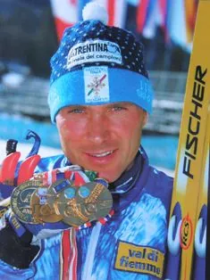
Российские лыжники-ориентировщики пришли на чемпионат мира в 1992 году во французском Понтарлье и сразу завоевали первые медали: Иван Кузьмин взял две бронзы, эстафета — серебро. Через два года в Италии Кузьмин стал первым российским чемпионом мира. В те же годы итальянец Николо Коррадини дважды подряд выиграл классическую дистанцию — редкий случай победы спортсмена не из Северных стран.
В 1998 году в австрийском Виндишгарстене Виктор Корчагин выиграл длинную дистанцию, а российская эстафета стала чемпионской. Первый чемпионат мира в России, в Красноярске в 2000 году, принёс золото Татьяне Власовой, Владиславу Кормщикову и мужской эстафете.
Пик пришёлся на домашний чемпионат 2007 года в Подмосковье: сборная России выиграла все восемь комплектов золотых медалей. Татьяна Власова победила в спринте, миддле, лонге и эстафете, Эдуард Хренников — во всех трёх личных гонках и в эстафете. За карьеру у Власовой восемь личных титулов чемпионки мира, у Хренникова — семь.
В 2009 году чемпионат впервые уехал в Азию — на японский курорт Русуцу. В 2011 году в шведском Тэнндалене появилась смешанная спринт-эстафета, и первыми чемпионами в ней стали Андрей Григорьев и Полина Мальчикова; Григорьев выиграл и длинную дистанцию. Следом пришло поколение Андрея Ламова, Кирилла Веселова, Марии Кечкиной и Алёны Трапезниковой.
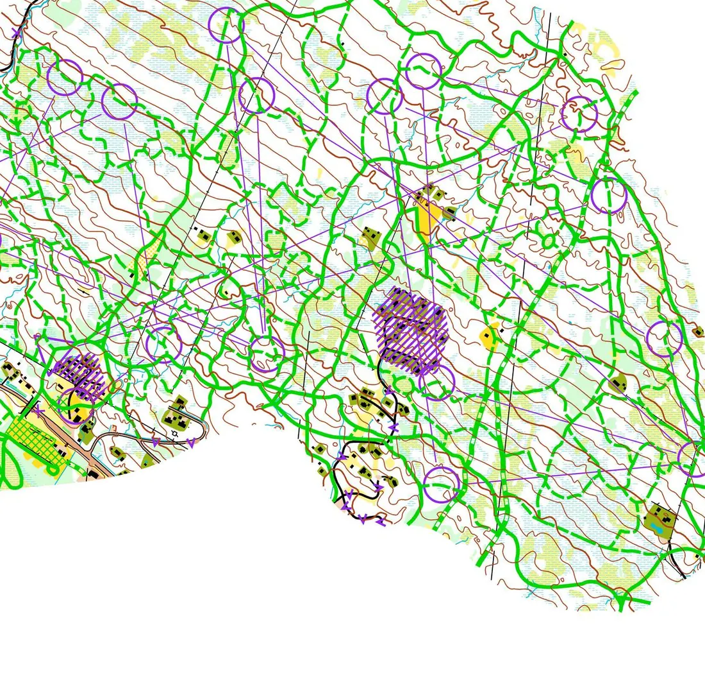
Переломные моменты
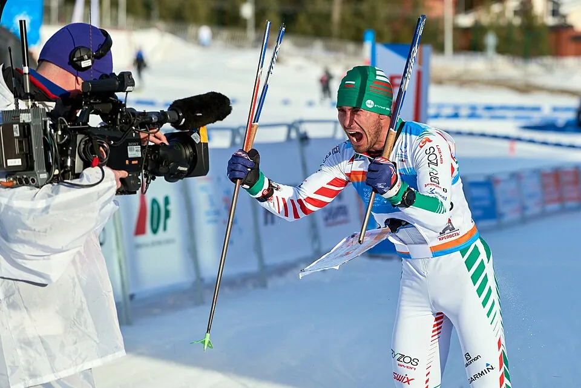
Второй красноярский чемпионат 2017 года завершился двойной победой российских эстафет на домашнем стадионе, но вошёл в историю и по другой причине: летом 2017 года IOF аннулировала результаты Полины Фроловой за нарушение антидопинговых правил и перераспределила медали. Это был один из самых громких допинговых случаев в ориентировании.
Чемпионат 2021 года в эстонском Кяэрику прошёл в пандемию и с новой программой: вместо классической длинной дистанции появилась гонка преследования, где порядок старта определяется результатами спринта. Там же Владислав Киселёв выиграл спринт, а Алёна Трапезникова и Андрей Ламов — смешанную эстафету. Это были последние титулы сборной России: с 2022 года IOF отстранила её от международных стартов.
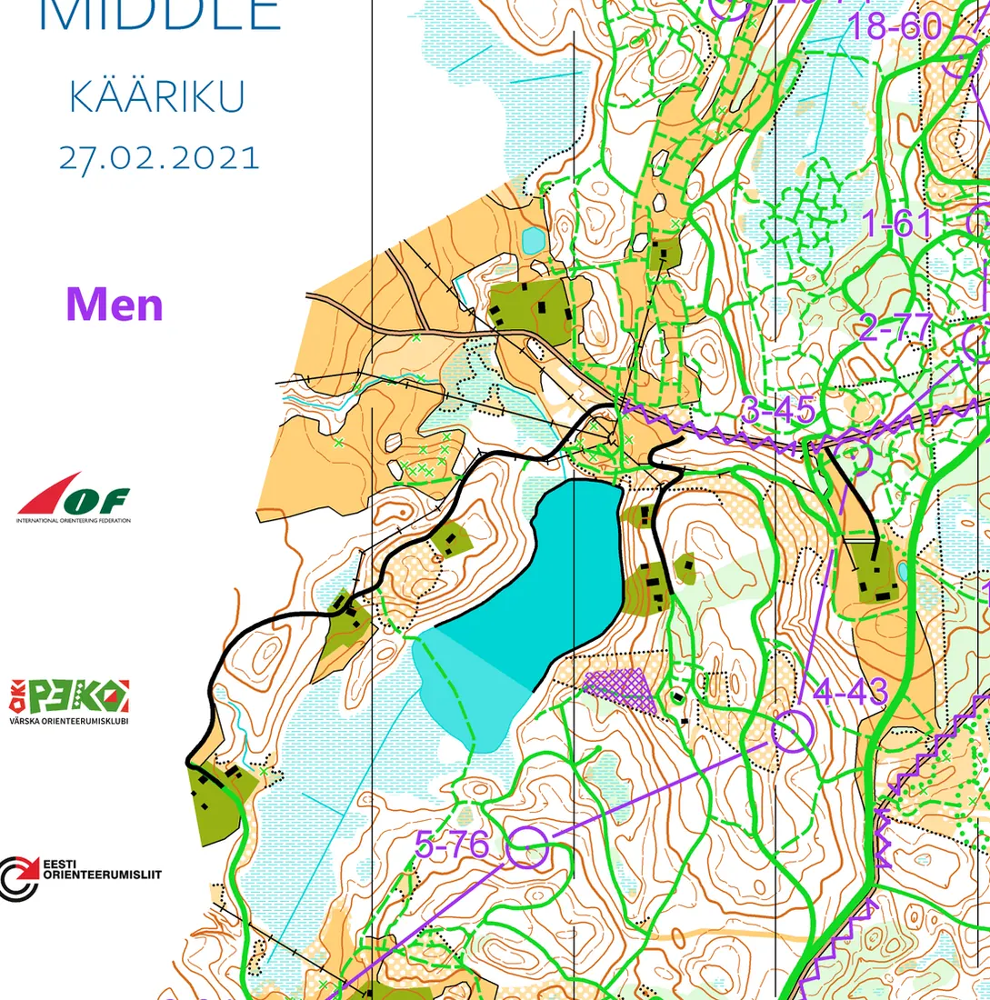
С 2022 года: Норвегия, Швеция и новые имена
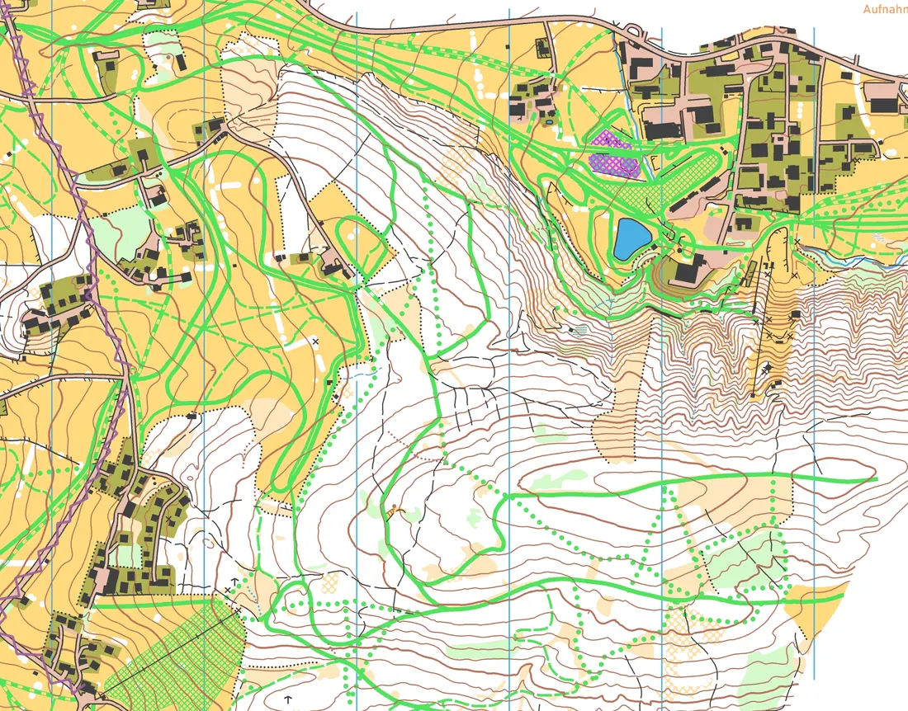
На чемпионате 2022 года в финском Кеми медали разошлись непривычно широко: эстонка Дейзи Кудре-Шнайдер выиграла спринт и миддл, болгарин Станимир Беломажев — миддл, шведка Линда Линдквист и норвежец Йорген Баклид — гонку преследования, а норвежская пара Баклид — Анна Ульвенсёэн — спринт-эстафету.
Дальше наступило время Баклида. В 2024 году в австрийском Рамзау — впервые за 26 лет в Альпах — он выиграл спринт, гонку преследования и миддл; у женщин по два золота взяли шведка Магдалена Ульссон и Ульвенсёэн. В 2026 году чемпионат вернулся в Русуцу, спустя 17 лет: Баклид победил в спринте и гонке преследования, а швейцарка Элиане Дайнингер выиграла преследование и стала первой чемпионкой мира по лыжному ориентированию в истории Швейцарии. Баклид успешен и летом: в 2025 году он стал чемпионом мира по ориентированию бегом в эстафете.
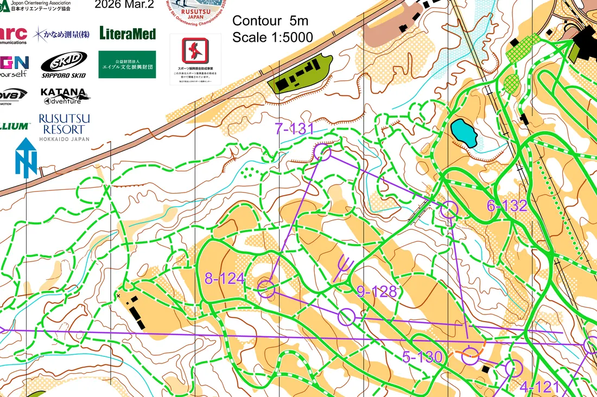
Герои
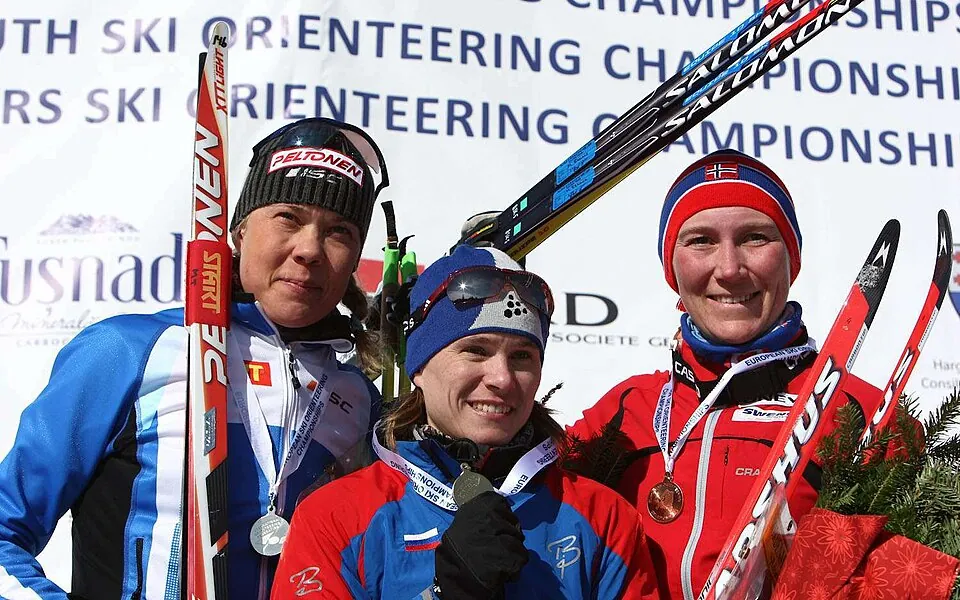
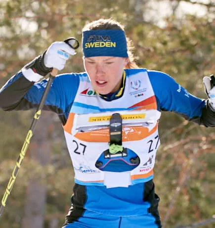
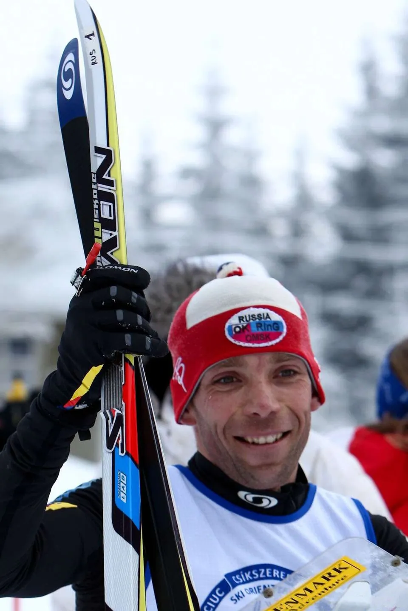
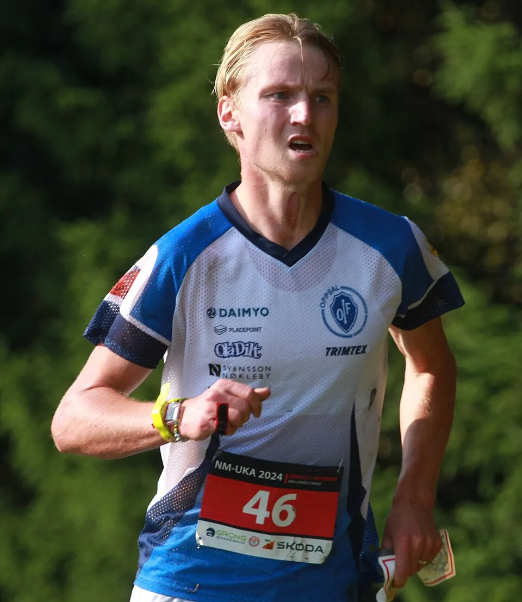
Самые титулованные в личных гонках — Татьяна Власова (8 золотых медалей) и Эдуард Хренников (7). Шведка Туве Александерссон, лучшая ориентировщица мира в беговой дисциплине, на лыжах семь раз выигрывала личные гонки чемпионатов мира — последней стала длинная дистанция 2019 года, — а в 2013 году в Риддере взяла и смешанную спринт-эстафету. Андрей Ламов — чемпион мира 2009, 2015 и 2019 годов, Йорген Баклид — главный герой 2020-х.
Смотреть
Источники
Даты, места и составы — Календарь O-Maps; статьи Википедии World Ski Orienteering Championships, Чемпионат мира по спортивному ориентированию на лыжах; новости IOF на orienteering.sport. Фрагменты карт — GPSSeuranta, orienteering.sport, IOF Eventor, O-GPS-Tracker; фотографии — Wikimedia Commons (авторы и лицензии указаны в подписях).Все старты серии с протоколами, картами, GPS-трансляциями и видео: в календаре и на странице чемпионата.